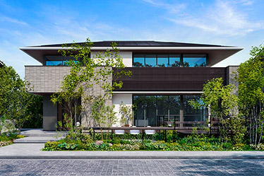
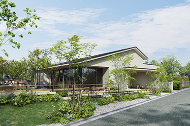
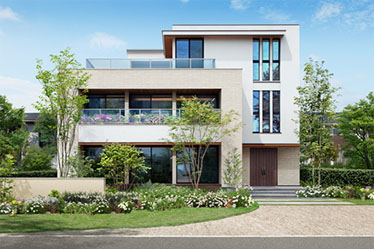
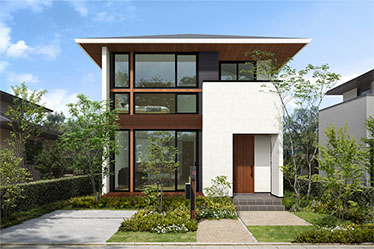
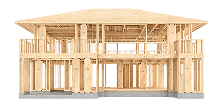
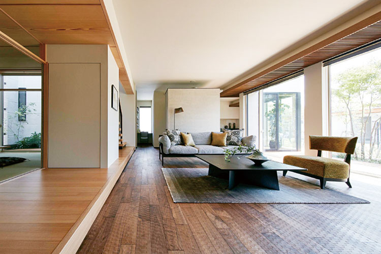
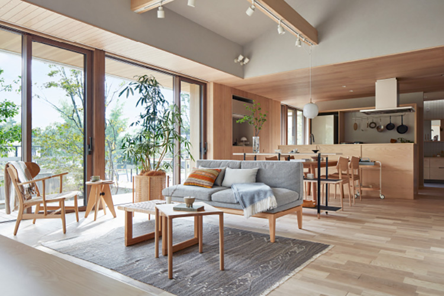
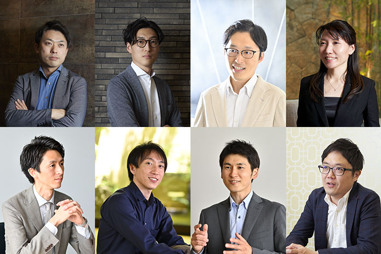
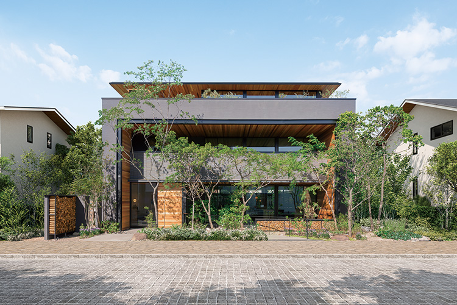

① 会社・基本データ
住友林業は、江戸時代から続く日本最古級の林業企業。1948年設立、前身は1691年創業の住友家「銅山備林」事業で、約330年の歴史を持つ。自社で森を持ち、木材から住宅まで一貫して手がける"木のプロ集団"として、木造注文住宅で業界を牽引している。
| 項目 | 内容 |
|---|---|
| 会社名 | 住友林業株式会社（Sumitomo Forestry Co., Ltd.） |
| 設立 | 1948年2月20日（前身は1691年創業） |
| 本社 | 東京都千代田区大手町1丁目3番2号 経団連会館 |
| 資本金 | 約553億円（553億3,200万円／2025年12月末） |
| 売上高（連結） | 2兆2,675億円（2025年12月期／前期比+10.4%） |
| 営業利益（連結） | 1,687億円（2025年12月期） |
| 従業員数（単体） | 5,341名（2024年度末） |
| 従業員数（連結） | 約2万6,000〜2万7,000名規模 |
| 年間受注戸数（国内） | 約8,000〜9,000棟前後 |
| 対応エリア | 沖縄県を除く全国 |
| 事業内容 | 木造注文住宅、リフォーム、分譲、賃貸、海外住宅、木材建材 |
| 社会的ミッション | GREEN×WOOD（脱炭素社会の実現に向けた木造建築推進） |
一言で言うと？
「木の住友林業」。自社で森を持ち、木材から住宅まで一貫して手がける"木のプロ集団"。BF（ビッグフレーム）構法による大開口・大空間デザインと、無垢材・挽板フローリングを使った上質な木質インテリアが最大の武器。Instagram公式アカウントは業界トップクラスの約20万6,000フォロワーを誇り、SNS発信力でも群を抜く。
グループ会社・海外展開
- 海外住宅事業：米国（大手ビルダー複数社を傘下）、オーストラリア、インドネシアなどで戸建住宅事業を展開
- 木材建材：国内社有林 約4.8万ha／海外 約24万ha、森林ファンド管理地含めると約31.7万ha
- 住友林業ホームテック：リフォーム専業会社（アフターサービスを担当）
- 住友林業レジデンシャル：マンション管理・賃貸仲介
② 商品ラインナップと坪単価
注文住宅（主力）

| 商品名 | 坪単価目安（2026年） | 構法 | 主な特徴 |
|---|---|---|---|
| The Forest BF | 90〜120万円 | BF構法 | 完全自由設計のフラッグシップ。最大7.1m大開口 |
| My Forest BF | 85〜110万円 | BF構法 | 汎用仕様。2階建て主力 |
| フォレストセレクションBF | 80〜110万円 | BF構法 | 100以上のプランから選ぶセミオーダー |
| グランドライフ（平屋） | 90〜115万円 | BF構法 | 平屋専用。勾配天井・深い軒で開放感 |
| グランドライフY（平屋） | 95〜125万円 | BF構法 | グランドライフの上位。大屋根・高天井強化版 |
| BF-si | 95〜130万円 | BF構法 | デザイナーズ仕様。挽板床・造作家具・海外照明を多用 |
| プラウディオ（PROUDIO） | 90〜130万円 | BF構法 | 3・4階建て都市型。狭小地対応。耐震等級3維持 |
| MB構法シリーズ | 75〜95万円 | 木造軸組+パネル | 汎用的な在来＋耐力面材。BF構法より価格を抑えやすい |



坪単価の推移（30〜40坪実邸平均）
| 年 | 坪単価目安 | 備考 |
|---|---|---|
| 2018年 | 約75〜85万円 | ウッドショック前 |
| 2020年 | 約80〜90万円 | コロナ影響で材料高騰開始 |
| 2022年 | 約85〜95万円 | ウッドショック直撃 |
| 2024年 | 約88〜100万円 | きこりん税廃止（2022-03）で見積透明化 |
| 2025年 | 約90〜110万円 | 年1〜2回の値上げが続く |
| 2026年 | 約90〜130万円 | オプション込み平均は約105〜115万円 |
建築総額の実態
総額4,000〜6,000万円になるケースが急増。実邸ブログを集計すると、30坪で約3,400〜4,000万円、35坪で約4,000〜4,800万円、40坪で約4,500〜5,500万円が中心帯。提案工事（設計士推奨仕様）を採用するたびに100万円単位で積み上がる仕組み。
坪数別 建築総額シミュレーション（2026年4月時点）
※ The Forest BF / My Forest BF（坪単価95万円想定）基準。金利1.5%・35年ローン・頭金なしで試算。土地代は含まない。
| 坪数 | 本体工事費 | 付帯・諸経費（20%） | 外構費 | 建築総額目安 | 月々返済額 |
|---|---|---|---|---|---|
| 25坪 | 約2,375万円 | 約475万円 | 150〜250万円 | 約3,000〜3,100万円 | 約9.2〜9.5万円 |
| 30坪 | 約2,850万円 | 約570万円 | 200〜300万円 | 約3,620〜3,720万円 | 約11.1〜11.4万円 |
| 35坪 | 約3,325万円 | 約665万円 | 200〜300万円 | 約4,190〜4,290万円 | 約12.9〜13.2万円 |
| 40坪 | 約3,800万円 | 約760万円 | 250〜350万円 | 約4,810〜4,910万円 | 約14.8〜15.1万円 |
| 45坪 | 約4,275万円 | 約855万円 | 300〜400万円 | 約5,430〜5,530万円 | 約16.7〜17.0万円 |
挽板床・タイル外壁・造作家具・無垢床等の上質仕様を採用すると坪単価+5〜15万円、BF-si（デザイナーズ）仕様なら+10〜20万円、プラウディオ（3階建て）は+5〜10万円。太陽光発電10kW追加は+250〜350万円。
③ 構造・耐震性能
BF（ビッグフレーム）構法
住友林業の注文住宅を代表する木造ラーメン構法。2005年の初代発表から2025年で20周年。

| 項目 | 詳細 |
|---|---|
| 構造種別 | 木造ラーメン構法（大断面集成柱＋メタルタッチ接合） |
| ビッグコラム | 幅560mm × 厚さ105mmの大断面集成柱。一般的な柱（105mm角）の約5倍の断面積 |
| 壁倍率 | 22.4倍/m相当（建築基準法最高値5.0倍の約4.5倍） |
| 接合方法 | メタルタッチ接合。高精度オリジナル金物でコラム＋梁＋基礎を一体化 |
| 大開口 | The Forest BFで最大7.1m（業界最大級） |
| 天井高 | 最大2,730mm（標準2,400mm＋αで可） |
| 耐震等級 | 原則等級3（最高等級） |
- 高層ビルや鉄骨造で使われる「剛接合」を木造で実現
- 壁倍率22.4倍/m相当で大開口・大空間でも耐震性を確保
- 耐震等級3（最高等級）を標準取得
- 熊本地震（2016）では住友林業の住宅で倒壊報告なし
マルチバランス（MB）構法
木造軸組＋構造用面材のハイブリッド。在来工法に近く、間取り自由度はやや低下するが、価格・リフォーム性で優位。
| 項目 | 内容 |
|---|---|
| 構法 | 木造軸組＋「きづれパネル」＋「地震エネルギー吸収パネル」 |
| きづれパネル | 格子状の木製耐力面材。壁倍率5.0（建築基準法最高等級）を実現 |
| 地震エネルギー吸収パネル | 特殊粘弾性ゴムを内蔵した制振部材。地震の揺れを最大約70%吸収（筋かい工法比） |
| 耐震等級 | 原則等級3 |
| 特徴 | BFより低コスト。汎用工法のためリフォーム・改築が容易 |
基礎工法
- ベタ基礎（標準）。鉄筋太径・高強度コンクリート
- 地耐力に応じて布基礎・杭基礎も対応
- 土台は国産ヒノキの防腐・防蟻処理材
グランドライフ（平屋）の耐震優位性
平屋は重心が低く、2階建てより揺れに強い構造。グランドライフはBF構法採用で、耐震等級3＋大屋根の開放感を両立。
④ 断熱性能
UA値（外皮平均熱貫流率）
| 商品 / 仕様 | UA値（6地域標準） | 断熱等級 |
|---|---|---|
| 360°トリプル断熱（標準仕様） | 0.41 W/m²K | 等級5（BELS 5つ星） |
| 360°トリプル断熱（強化オプション） | 0.40〜0.46 | 等級6 |
| さらに上位オプション | 0.26〜0.32 | 等級6〜7 |
| プラウディオ（3階建て） | 0.50前後 | 等級5 |
| （参考）国の省エネ基準 | 0.87 | 等級4 |
360°トリプル断熱（標準採用）
2020年9月より全注文住宅に標準採用された住友林業の代表的断熱仕様。屋根・外壁・床の全方向を高性能断熱材で包む。
| 部位 | 断熱材 | 厚さ |
|---|---|---|
| 外壁 | 高性能グラスウール24K | 105mm |
| 天井 | 高性能グラスウール | 210mm |
| 床 | 硬質ウレタンフォーム | 100mm |
| 窓 | アルゴンガス入りLow-E複層ガラス（樹脂+アルミ複合サッシ） | — |
窓仕様
- 標準：アルミ樹脂複合サッシ＋Low-E複層ガラス（アルゴンガス入り）
- オプション：樹脂サッシ＋Low-Eトリプルガラス（UA値0.26狙い）
- 大開口を優先する設計のため、窓面積が大きい＝熱損失も増えやすい。窓の仕様アップが快適性の鍵
他社との断熱比較（UA値代表値・6地域）
| ハウスメーカー | UA値 | 断熱等級 |
|---|---|---|
| 一条工務店（i-smart） | 0.25 | 等級7 |
| スウェーデンハウス | 0.38 | 等級6 |
| 三井ホーム | 0.43 | 等級5〜6 |
| 住友林業（標準） | 0.41〜0.46 | 等級5 |
| 積水ハウス シャーウッド | 0.46〜0.55 | 等級5 |
| ヘーベルハウス | 0.55〜0.60 | 等級5 |
正直なところ：大手HMの中で「中の上」。一条やスウェーデンハウスには及ばない。大開口・吹き抜けを優先する設計思想なので、性能特化派には向かない。
⑤ 気密性能
C値（相当隙間面積）
| 項目 | 数値 |
|---|---|
| 全棟測定 | 非実施（標準では測定しない） |
| 施主測定時の実測値 | 0.6〜1.1 cm²/m² |
| 目標基準（社内） | 1.0以下が多いが公表なし |
| 一般住宅の目安 | 1.0〜2.0 cm²/m² |
測定方法の特徴
- 原則非公表・非実施：住友林業は気密測定を公式メニューとして提供していない
- 施主依頼で測定可能：外部業者を手配すれば測定可能（費用5〜10万円程度）
- 現場での施工品質に依存。職人の腕によって実測C値にバラつきが出る傾向
他社との気密比較
| ハウスメーカー | C値（公表データ） | 全棟測定 |
|---|---|---|
| 一条工務店 | 0.59（全棟平均） | 全棟実施・公表 |
| 住友林業 | 非公表（実測0.6〜1.1） | 非実施 |
| 積水ハウス | 非公表 | 非実施 |
| 三井ホーム | 非公表 | 希望者のみ |
| ヘーベルハウス | 非公表 | 非実施 |
ARCHIST視点：気密性能を数値で証明したい方は「施主依頼で気密測定を入れる」か、標準で全棟測定する一条工務店と比較検討すべき。
⑥ 換気・空調システム
標準：第3種換気（一般的な24時間換気）
| 項目 | 内容 |
|---|---|
| 方式 | 第3種換気（排気ファン式） |
| 給気 | 各室の給気口から自然吸気 |
| メリット | 機器コストが安い・構造シンプル・故障少ない |
| デメリット | 熱交換機能なし。冬は冷気が入る。花粉・PM2.5対策は別途 |
オプション：熱交換型第1種換気
| 項目 | 内容 |
|---|---|
| 方式 | 第1種全熱交換型換気（給排気ともに機械） |
| 熱交換効率 | 約70〜80% |
| フィルター | 花粉・PM2.5対応の高性能フィルター |
| 費用目安 | +40〜80万円（機種・面積による） |
全館空調「エアドリーム ハイブリッド」（オプション）

| 項目 | スペック |
|---|---|
| 機能 | 冷暖房＋換気＋空気清浄 |
| 仕組み | 小屋裏/天井裏にエアコンと換気装置を設置、ダクトで各室配分 |
| ランニング | 月1〜3万円（季節・広さによる） |
| 費用目安 | +150〜250万円 |
床暖房
- オプション扱い：一条工務店のような「全館床暖房標準」ではない
- ガス床暖房 / 電気床暖房をリビング＋ダイニングに部分設置が一般的
- 費用目安：+30〜80万円
⑦ デザイン
「木の住友林業」の世界観

- 無垢材・挽板フローリング：本物の木の質感。経年変化を楽しめる
- 木質内装：造作家具・現し梁・羽目板・格子で木の温もりを表現
- 和モダン・ナチュラルモダン・ジャパンディ：得意とするテイストは幅広い
- BF構法の大開口：ウッドデッキと一体化させる設計が人気


代表的なインテリア仕様
| 設備 | 特徴 |
|---|---|
| 挽板フローリング | 薄く削った本物の木を表面に貼った床材。無垢の質感×シートの安定性 |
| 無垢床オプション | オーク・ウォルナット・チーク・ブラックチェリーなど樹種豊富 |
| 造作家具 | 設計士と作るオーダーメイド収納・TVボード・デスクが得意 |
| 現し梁 | BF構法のビッグビーム（大梁）をそのまま見せる意匠 |
| 木製格子・木天井 | 玄関・リビングの象徴的デザインに使用 |
| タイル外壁 | LIXIL製など採用可。汚れにくさ・メンテナンス性に優れる |
自由設計の強み
- BF構法の構造自由度により、間取り制約が極めて少ない
- 狭小地・変形地・3〜4階建て（プラウディオ）も対応
- Instagram映え・施主実邸の写真発信が活発
デザインの注意点
- 設計士ガチャ：設計士の当たり外れが大きいと言われる。指名制度はないが、営業経由で推しの設計士を依頼することは可能
- 提案工事が値段を吊り上げる：魅力的な提案ほど追加費用になるため、予算管理が難しい
Instagram・SNSプレゼンス
| 媒体 | アカウント | フォロワー（2026年4月） |
|---|---|---|
| Instagram戸建住宅 | @sfc_ie | 約206,000人（業界トップクラス） |
| Instagramリフォーム | @sfc_ht | 約24,000人 |
| YouTube | 住友林業グループ公式 | 運営中 |
| LINE | 公式アカウント | 多数 |
⑧ 保証・メンテナンス
保証体系（2020年4月1日以降の契約が対象／現行制度）
| 内容 | 期間 | 条件 |
|---|---|---|
| 構造躯体 | 初期30年（無料） | 3ヶ月・1年・2年・5年・以降5年ごとの定期点検を受けること |
| 防水 | 初期30年（無料） | 同上 |
| シロアリ | 10年保証 | 10年ごとに有料防蟻処理で延長可 |
| 定期無料点検 | 60年目まで | 5年ごとの定期点検を継続 |
| 最長保証期間 | 60年（有料延長） | 30年目に有料メンテナンス工事を実施 |
定期点検スケジュール
引渡し後：3ヶ月 → 1年 → 2年 → 5年 → 10年 → 15年 → 20年 → 25年 → 30年 → 35年 → 40年 → 45年 → 50年 → 55年 → 60年（60年まで5年ごとに無料点検）
60年保証延長の条件
- 30年目に屋根・外壁・防水の大規模メンテナンス工事（住友林業ホームテックで実施）
- 費用目安：200〜400万円（広さ・劣化状況による）
- 有料メンテナンスを受けずに済ませた場合、保証は30年で終了
きこりん税の廃止（2022年3月）
従来、提案工事（オプション）や外構工事に約12%の「きこりん税」と呼ばれる諸経費が上乗せされていたが、2022年3月に廃止。現在は諸経費込みの価格が見積書に記載される形となり、透明性は改善された。ただし、オプション費用そのものが下がったわけではなく、坪単価の値上がりで実質総額は変わらない・あるいは上昇している。
他社との保証比較
| ハウスメーカー | 初期保証 | 最大延長 | 特徴 |
|---|---|---|---|
| 住友林業 | 30年 | 60年（有料メンテ実施時） | きこりん税2022廃止 |
| 一条工務店 | 30年 | 30年 | シロアリ予防10・20年目無償 |
| 積水ハウス | 30年 | 永年（ユートラスシステム） | 建物がある限り延長可能 |
| ヘーベルハウス | 30年 | 60年 | ホームドクター制度 |
| 三井ホーム | 10年 | 60年 | 有料点検・メンテ前提 |
| タマホーム | 10年 | 60年（長期優良住宅） | シロアリ10年保証含む |
⑨ 建築期間
各フェーズの期間目安
| フェーズ | 期間 |
|---|---|
| 展示場見学〜申込（5万円） | 1〜3ヶ月 |
| 申込〜契約前打合せ（間取り確定） | 2〜4ヶ月 |
| 契約金100万円支払い・工事請負契約 | — |
| 契約〜着工（詳細設計・確認申請・地盤調査） | 3〜5ヶ月 |
| 着工〜上棟 | 1〜2ヶ月 |
| 上棟〜引渡し | 4〜6ヶ月 |
| 合計（初回来場〜引渡し） | 12〜20ヶ月 |
| 着工〜引渡し | 5〜8ヶ月 |
契約までの打合せ回数
実邸ブログを集計すると、契約前打合せは8〜17回と幅広い。完全自由設計のため決定事項が多く、半年〜1年以上かかるケースも珍しくない。
現場での特徴
- 大工の腕への依存度が高い：工場プレカット＋現場組み立てだが、化粧梁や造作家具など現場加工も多い
- 季節・天候の影響：上棟・屋根工事は天候次第
- 提携大工の技量差：地域によって仕上がりに差が出ることあり
打合せが長期化する代わりに、細部まで詰められる良さもある。「家づくりを楽しみたい」派に向く。
⑩ 客層・オリコン顧客満足度
典型的な施主プロファイル
| 属性 | 傾向 |
|---|---|
| 年齢 | 30代後半〜40代が中心 |
| 世帯構成 | 共働き・子育て世代、二世帯住宅も一定比率 |
| 世帯年収 | 800〜1,200万円がボリュームゾーン |
| 最低年収目安 | 世帯年収600万円〜（借入比率次第） |
| 職業 | 大手企業正社員・公務員・医師・経営者など |
| 価値観 | デザイン・上質感・自然素材へのこだわり。数値スペックより"感性"で選ぶ |
| 情報収集 | Instagram・施主ブログ・YouTubeを徹底リサーチ |
住友林業を選ぶ理由TOP3
- 木の温もり・本物の素材感：無垢床や挽板フローリングの質感が他社と違う
- デザイン自由度と提案力：BF構法＋設計士の提案で理想の間取り・意匠が実現しやすい
- ブランド力・大手の安心感：上場企業の最大手。親世代にも説明しやすい
オリコン顧客満足度ランキング（2026年版）
2026年2月2日発表。調査対象52社、回答者17,114人、評価項目13項目。
住友林業の2026年ランキング
- 総合 3位（78.7点） — 木造大手では最上位
- 東海エリア（愛知・岐阜・三重・静岡） 1位（79.1点）
- 北関東エリア 1位（80.0点）
- 九州・沖縄エリア 1位（81.0点）
2026年版 総合ランキング Top5
| 順位 | 会社名 | スコア |
|---|---|---|
| 1位 | スウェーデンハウス | 81.0点（12年連続1位） |
| 2位 | ヘーベルハウス | 78.9点 |
| 3位 | 住友林業 | 78.7点 |
| 4位 | 積水ハウス | 78.3点 |
| 5位 | 一条工務店 | 77.6点 |
推移（直近3年）
| 年度 | 住友林業の順位 | スコア |
|---|---|---|
| 2024年 | 総合4位 | 78.1点 |
| 2025年 | 総合2位 | 78.7点 |
| 2026年 | 総合3位 | 78.7点 |
ARCHIST視点の注目点：愛知県（ARCHIST対応エリア）を含む東海地方で1位（79.1点）というのは最大の訴求ポイント。愛知・岐阜・三重・静岡で顧客満足度トップのハウスメーカーと言える。総合でも3位（78.7点）で、大手HMの中でも安定して上位。
施主の満足度傾向
- 高評価：デザイン、提案力、木の素材感、大手の安心感、アフター対応の丁寧さ
- 低評価：坪単価の高さ、断熱性能の体感、打合せの長期化、担当者のばらつき
⑪ 他社との比較表
| 項目 | 住友林業 | 一条工務店 | 積水ハウス シャーウッド |
三井ホーム | ヘーベルハウス | タマホーム |
|---|---|---|---|---|---|---|
| 坪単価目安 | 90〜130万 | 80〜105万 | 90〜125万 | 85〜130万 | 95〜130万 | 55〜80万 |
| UA値（標準） | 0.41〜0.46 | 0.25 | 0.46〜0.55 | 0.43 | 0.55〜0.60 | 0.55 |
| C値 | 非公表（実測0.6〜1.1） | 0.59（全棟） | 非公表 | 非公表 | 非公表 | 非公表 |
| 構造 | 木造BF構法 | 木造2×6 | 鉄骨/木造 | 木造2×6 | 鉄骨（ALC） | 木造軸組 |
| 設計自由度 | ◎ | △ | ◎ | ◎ | ○ | ○ |
| デザイン性 | ◎（木質感） | △ | ◎ | ◎（洋風） | ○ | ○ |
| 保証（初期） | 30年 | 30年 | 30年 | 10年 | 30年 | 10年 |
| 保証（最大） | 60年 | 30年 | 永年 | 60年 | 60年 | 60年 |
| 全館床暖房 | オプション | 標準 | オプション | オプション | なし | なし |
| 206,000人 | 少ない | 160,000人 | 130,000人 | 少ない | 少ない |
住友林業 vs 積水ハウス シャーウッド（木造ライバル）
| 比較軸 | 住友林業 | 積水ハウス シャーウッド |
|---|---|---|
| 構法 | BF構法（木造ラーメン） | MJ Wood・SHAWOOD構法 |
| 木の素材感 | ◎（無垢・挽板豊富） | ○（モルダー加工材など） |
| デザイン自由度 | ◎（7.1m大開口） | ◎ |
| 断熱性能 | 0.41〜0.46 | 0.46〜0.55 |
| 保証 | 30〜60年 | 30年〜永年 |
| リセールバリュー | ○ | ◎（ブランド力） |
| 向く人 | 木の温もり・素材感重視 | ブランド・長期安心重視 |
住友林業 vs 三井ホーム
| 比較軸 | 住友林業 | 三井ホーム |
|---|---|---|
| 構法 | 木造ラーメン（BF） | 木造2×6 |
| デザイン | 和モダン・木質感 | 洋風・曲線・吹抜け |
| 全館空調 | エアドリーム（オプション） | スマートブリーズ（オプション） |
| 断熱 | 0.41〜0.46 | 0.43 |
| 向く人 | 日本的な木の家が好き | 洋風・立体空間が好き |
住友林業 vs 一条工務店グランセゾン
| 比較軸 | 住友林業 | 一条工務店グランセゾン |
|---|---|---|
| 構法 | BF構法 | 在来軸組I-HEAD構法 |
| 断熱性能 | 0.41 | 0.38（等級5〜6） |
| 気密 | 非公表 | 0.59全棟測定 |
| デザイン | 木質感◎・挽板床 | グレイスシリーズ（シート） |
| 坪単価 | 90〜130万 | 80〜100万 |
| 向く人 | 無垢・挽板の本物感重視 | 性能バランス×木質感も欲しい |
⑫ よくある後悔・失敗事例
後悔1：当初見積より総額が大幅に上がった（最多の後悔）
「契約後の打合せで提案工事が次々追加され、最終的に1.3〜1.5倍の総額になった」「設計士の提案は魅力的すぎて断れなかった。結果600万円オーバー」という声が多い。
契約前に「提案工事込みのフル装備見積」を出してもらう。予算上限を明確に伝える。
後悔2：標準断熱では冬に寒さを感じる
「360°トリプル断熱といっても等級5。吹き抜け＋大開口で冷気が足元に降りてくる」「床暖房を入れなかった部屋との温度差が大きい」。
等級6以上の断熱オプション＋全館空調or床暖房を検討。窓の仕様アップ（トリプルサッシ）も有効。
後悔3：気密測定をしてくれない
「C値を気にして打診したが『測定しない方針』と断られた」「結果、実際の気密が分からない不安がある」。
第三者業者による気密測定を自費（5〜10万円）で入れる。もしくはC値測定が標準の他社を検討。
後悔4：担当者・設計士のばらつきが大きい
「最初の営業さんは良かったが、設計士の提案力が弱く何度も書き直しになった」「契約後に営業が変わり、レスポンスが遅くなった」。
SNSで実績のある担当者・設計士を紹介経由で指名する。必要なら担当変更も依頼可能。
後悔5：打合せが長期化して疲弊した
「完全自由設計ゆえに決定事項が100項目以上。半年以上かかった」「共働きで打合せ時間が取れず、週末が埋まり続けた」。
フォレストセレクションBF（プランから選ぶセミオーダー）を選べば期間短縮可能。
後悔6：外構費用が予想以上にかかった
「本体価格に外構費は含まれず、追加200〜300万円になった」「住友林業緑化（提携外構）は割高だった」。
外構は分離発注で相見積もり。3社以上比較する。
後悔7：固定資産税が高い
「タイル外壁・挽板フローリング・造作家具・太陽光などで建物評価額が高評価」「30坪で年14〜18万円（減税期終了後）」。
長期優良住宅認定を取得して減税期間を延長（3年→5年）。
後悔8：提案工事の値段が不透明
「『この壁、もう少し広げましょう』の一言が後で数十万円の追加に」「きこりん税が廃止されたが、実態としては坪単価に織り込まれただけ」。
提案ごとに金額を確認する習慣をつける。見積書のバージョン管理を徹底。
⑬ まとめ
- BF構法による最大7.1mの大開口・大空間
- 無垢材・挽板フローリング・造作家具など業界最高峰の木質感
- 初期保証30年（無条件）・最長60年
- Instagram約20万6,000フォロワー（業界トップクラス）のデザイン発信力
- オリコン顧客満足度 東海1位（79.1点）・総合3位（78.7点）
- 社有林4.8万ha保有で木材調達が安定（ウッドショック耐性）
- 断熱UA値0.41（等級5）は大手HM中の「中の上」で性能特化型に劣る
- 気密（C値）は全棟非測定・非公表
- 担当者・設計士の当たり外れが大きい
- 提案工事で総費用が想定以上に上がりやすい
- 打合せが長期化（契約前8〜17回／合計12〜20ヶ月）
- 値引きは原則なし（定価販売に近い）
こんな人に住友林業はオススメ
向いている人
- 木の温もり・無垢や挽板の本物感にこだわりたい
- デザイン自由度・大開口・吹き抜けで理想の意匠を実現したい
- 大手の安心感・60年保証で家を建てたい
- 世帯年収800〜1,200万円・総額4,000〜5,500万円の予算が組める
- 家づくりの過程（半年〜1年以上）を楽しめる時間的余裕がある
向かない人
- とにかく予算を抑えたい（→タマホーム等）
- 断熱等級7・C値0.5以下を数値で欲しい（→一条・スウェーデン）
- 打合せ期間を短縮したい
- 鉄骨の安心感・耐火性（→ヘーベル・積水鉄骨）
- 値引きで総額を下げたい
ARCHIST視点の判断軸
住友林業は「木の質感とデザイン自由度を、大手の安心感で実現したい」人に最適。東海エリア1位（79.1点）・総合3位（78.7点）という顧客満足度は、愛知県で検討する施主にとって最も信頼できる指標の一つ。ただし総額が上がりやすく、打合せも長期化するため、予算と時間に余裕がある層向け。性能特化（断熱・気密の数値重視）や、コスト最優先の層には他社を推奨するのが誠実。